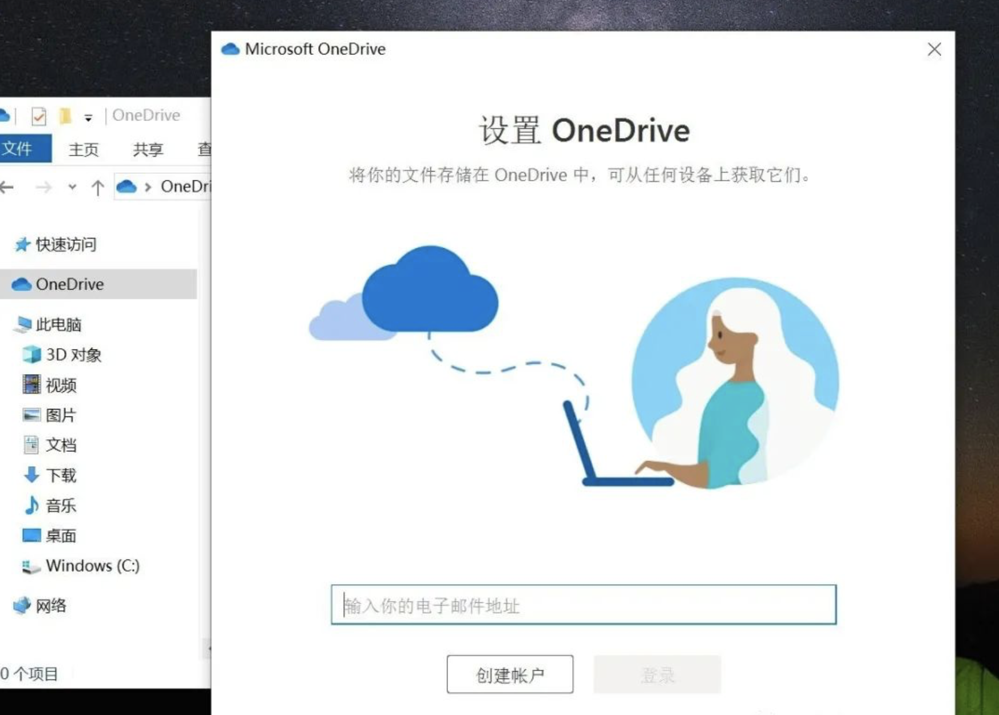

教育邮箱免费获得至少1TB方法
提示：教育版空间为至少1TB，最多5TB，具体依赖管理员是如何配置帐号属性。且部分学校若购买了Office 365服务，Office 365可一并提供，否则只能使用网页版Office 365服务，无法配置到客户端。
用学校教育邮箱注册的OneDrive账户，学校OneDrive管理员有权查看里面的内容，所以为了保证个人数据安全，里面尽量不要放置隐私数据。
一、开通edu教育邮箱
很多高校都有学校邮箱，其结尾一般为xx.edu.cn。至于申请方式，一般是进入学校的个人门户，然后填写相关信息就可以得到学校邮箱了。还有一些学校，学生入学直接自动生成一个邮箱，对应于每个学生，非常方便。具体申请方法请详询学校或相关组织。
二、进入Onedrive教育版主页
Onedrive教育版官网主页： https://www.microsoft.com/zh-cn/education/products/office
进入学生注册页面之后，输入你的学校邮箱，点击“立即开始”。

点击立即开始之后，会进入选择，根据自己是学生或者老师就选择对应的选项。
然后就填写你的相关信息就可以了，输入邮箱收到的验证码，点击下方开始，就完成了。
三、登录Onedrive开始使用教育版本
在电脑里找到Onedrive，登录就可以了。 如果电脑不是最新版Onedrive，可以去Onedrive官网上下载适合自己平台的最新版安装软件，安装到电脑上。 就会弹出这个登录界面，然后输入Microsoft账号就可以点击登录了。 会弹出一个选择“个人”还是“工作或学校”，点击工作或学校，然后输入密码， 选择自己想要保存资料到本地磁盘的位置，建议保存到C盘之外，例如E盘。
接下来就可以尽情使用至少1TB的Onedrive教育版服务了！